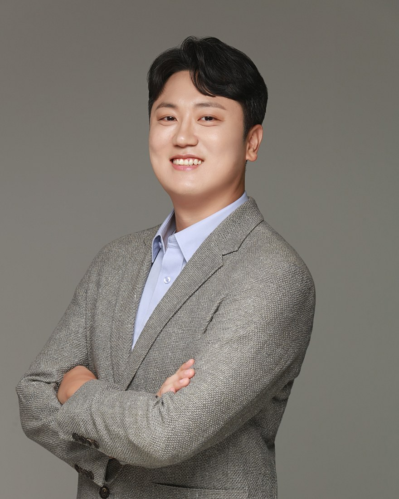

Associate Professor · Director, Computer Security Lab
School of Computer Science and Engineering
Pusan National University, Busan, South Korea
I work on system security. My research builds defenses that make low-level software memory-safe and properly isolated, usually by co-designing compilers and runtimes with the hardware features already present in commodity processors — ARM TrustZone and TrustZone-M, memory tagging, memory domains and protection keys, and custom RISC-V ISA extensions.
Recent work targets resource-constrained embedded and IoT devices, WebAssembly runtimes, and robotics middleware, where conventional protections are too expensive to apply directly.
Memory safety · Control-flow integrity · In-process isolation · Trusted execution environments · Embedded and IoT security · WebAssembly · RISC-V · Kernel protection
I am looking for motivated graduate and undergraduate students who want to work on system security. If you enjoy operating systems, compilers, or computer architecture and want to break and then fix real systems, please get in touch by email. Details are on the lab page.
* corresponding author · ** joint first authors